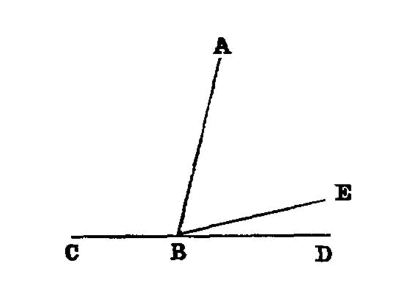

adjacent angles equal to two right angles make a straight line
{kind=link}
If with any straight line, and at a point on it, two straight lines not lying on the same side make the adjacent angles equal to two right angles, the two straight lines will be in a straight line with one another. [^I.14:1]
===
For with any straight line AB, and at the point B on it, let the two straight lines BC, BD not lying on the same side make the adjacent angles ABC, ABD equal to two right angles;
I say that BD is in a straight line with CB.
For, if BD is not in a straight line with BC, let BE be in a straight line with CB.
Then, since the straight line AB stands on the straight line CBE,
the angles ABC, ABE are equal to two right angles. [<a href=”/elem.1.13”>I. 13</a>]
But the angles ABC, ABD are also equal to two right angles;
therefore the angles CBA, ABE are equal to the angles CBA, ABD. [<a href=”/elem.1.post.4”>Post. 4</a> and <a href=”/elem.1.c.n.1”>C.N. 1</a>] [^I.14:2]
Let the angle CBA be subtracted from each; therefore the remaining angle ABE is equal to the remaining angle ABD, [<a href=”/elem.1.c.n.3”>C.N. 3</a>]
the less to the greater: which is impossible. Therefore BE is not in a straight line with CB.
Similarly we can prove [^I.14:3] that neither is any other straight line except BD. <pb n=”277”/>
Therefore CB is in a straight line with BD.
Therefore etc.
- [^I.14:1]: If with any straight line….
There is no greater difficulty in translating the works of the Greek geometers than that of accurately giving the force of prepositions. <foreign lang=”greek”>πρός</foreign>, for instance, is used in all sorts of expressions with various shades of meaning. The present enunciation begins <foreign lang=”greek”>ἐὰν πρός τινι εὐθείᾳ καὶ τῷ πρὸς αὐτῆ σημείῳ</foreign>, and it is really necessary in this one sentence to translate <foreign lang=”greek”>πρός</foreign> by three different words, with, <em>at</em>, and <em>on</em>. The first <foreign lang=”greek”>πρός</foreign> must be translated by <em>with</em> because two straight lines <quote>make</quote> an angle <em>with</em> one another. On the other hand, where the similar expression <foreign lang=”greek”>πρὸς τῇ δοθείση εὐθείᾳ</foreign> occurs in <a href=”/elem.1.23”>I. 23</a>, but it is a question of <quote>constructing</quote> an angle (<foreign lang=”greek”>συστἡσασθαι</foreign>), we have to say <quote>to construct <em>on</em> a given straight line.</quote> <title>Against</title> would perhaps be the English word coming nearest to expressing all these meanings of <foreign lang=”greek”>πρός</foreign>, but it would be intolerable as a translation.
- [^I.14:2]: equal to the angles
Todhunter points out that for the inference in this line <a href=”/elem.1.post.4”>Post. 4</a>, that all right angles are equal, is necessary as well as the Common Notion that things which are equal to the same thing (or rather, here, to <em>equal things</em>) are equal. A similar remark applies to steps in the proofs of <a href=”/elem.1.15”>I. 15</a> and <a href=”/elem.1.28”>I. 28</a>.
- [^I.14:3]: we can prove.
The Greek expresses this by the future of the verb, <foreign lang=”greek”>δείξομεν</foreign>, <quote>we shall prove,</quote> which however would perhaps be misleading in English.